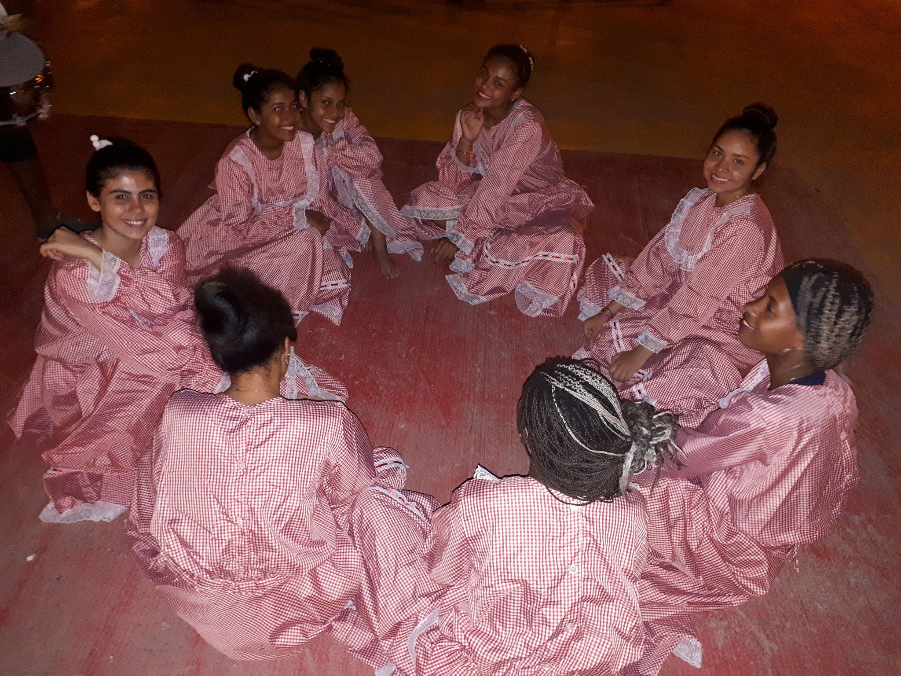
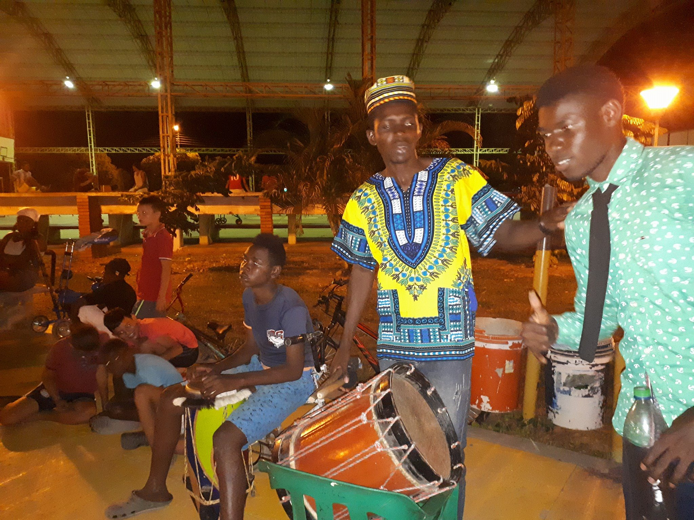
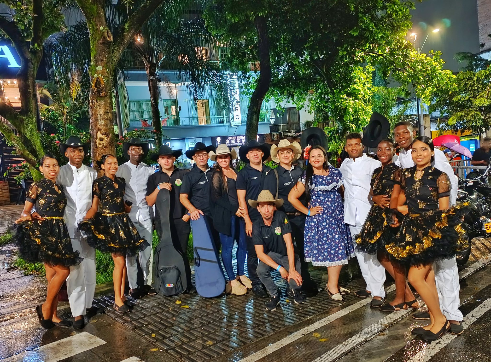
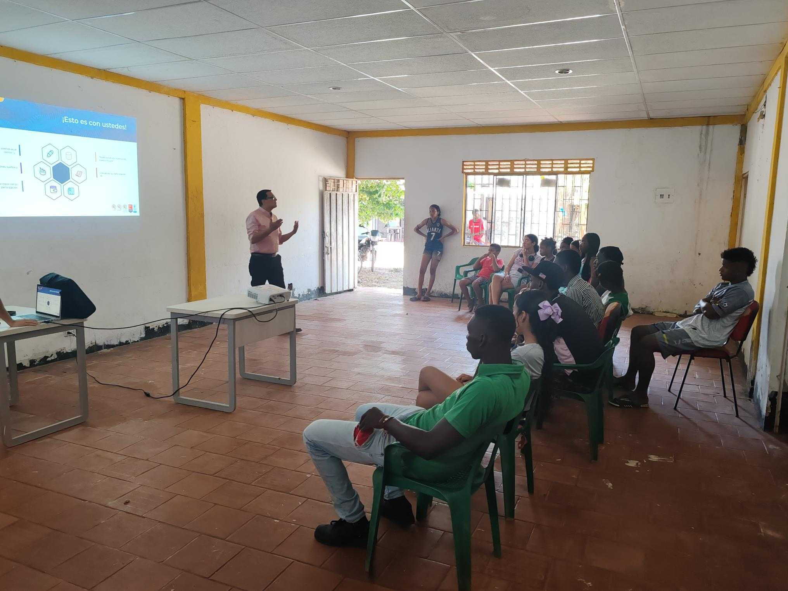

Un recorrido institucional sobre la historia cultural de Afrocrece y su compromiso con la memoria afrodescendiente.
Somos una comunidad afrodescendiente que fortalece identidad, cultura y participación desde Veracruz, Cumaral. Afrocrece nace del territorio y transforma memoria viva en procesos reales para niñas, niños, jóvenes y familias.

+0personas impactadas+0actividades culturales+0años de proceso comunitario
Quiénes somos
Historia comunitaria con vocación cultural e institucional
Afrocrece nace en Veracruz, Cumaral, como una respuesta comunitaria para preservar memoria, fortalecer identidad y abrir rutas de participación cultural con enfoque territorial.
Origen y memoria viva
La oralidad, la danza y los saberes ancestrales son parte de un archivo vivo que se transmite entre generaciones. Desde allí, la comunidad construye procesos educativos y culturales que dignifican la identidad afrodescendiente.
Participación y territorio
Niñas, niños, jóvenes y familias participan en encuentros que integran arte, formación y liderazgo local, consolidando un tejido social que reconoce su historia y la transforma en acción colectiva.
Fortalecimiento de identidad territorial.
Procesos artísticos con sentido comunitario.
Memoria cultural organizada para consulta pública.
“La memoria no es pasado inmóvil: es una práctica cotidiana de comunidad, dignidad y futuro.”

Encuentro comunitario
Memoria compartida y participación territorial.

Danza y tradición
Expresión cultural que transmite identidad.

Juventud y futuro
Nuevas generaciones fortaleciendo memoria viva.
Memoria audiovisual
Tres registros culturales de Afrocrece para consulta y reproducción directa.
Memoria comunitaria
Registro de encuentro comunitario que evidencia participación, tradición oral y fortalecimiento de identidad.
Territorio y juventud
Memoria audiovisual de procesos culturales donde juventud y familias articulan territorio y pertenencia.
Danza como archivo vivo
Documento visual sobre danza y memoria viva como herramientas de organización comunitaria.
Explora el archivo cultural Afrocrece
Consulta el archivo cultural Afrocrece y descubre registros, relatos, videos y memorias construidas desde la comunidad.